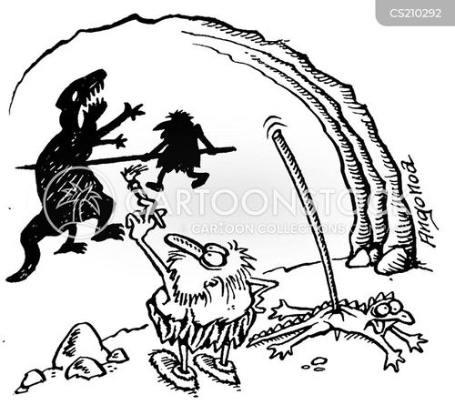
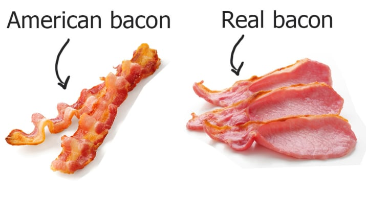
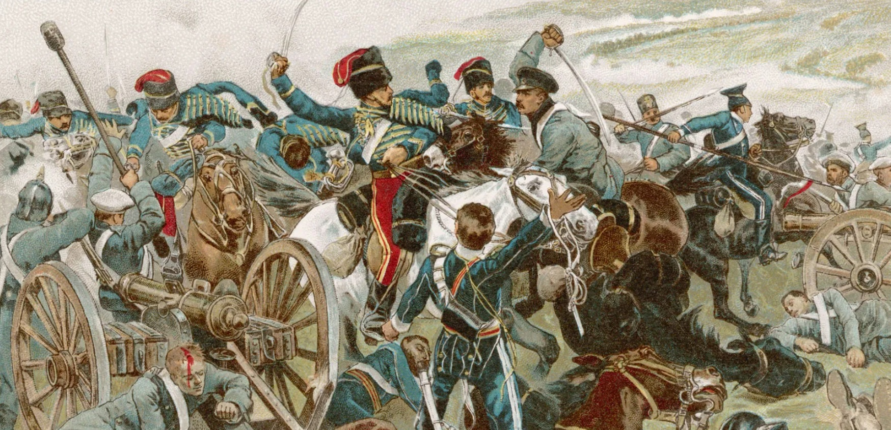
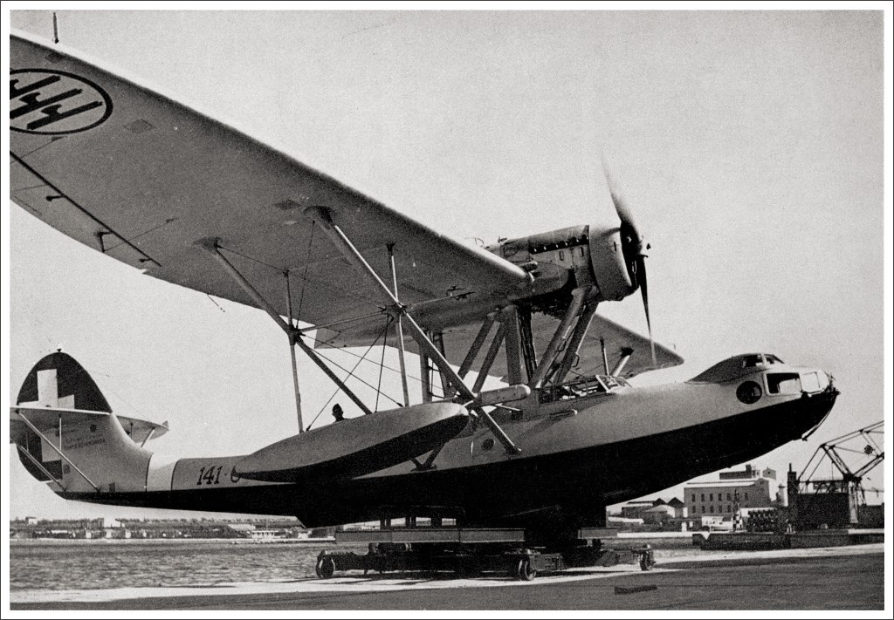
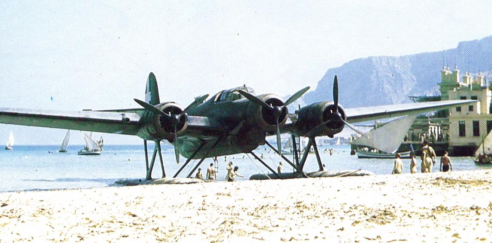

WW2 중 항모에서의 야간 작전 (29) - 경기병 여단에게도 한 번만 시켰다구
게시: 2025-09-04T06:30:50+09:00
<걸러서 들어야 한다> 말이 쉬워서 '타란토 습격'이지, 아무 것도 안 보이는 깜깜한 밤에 수백 km 떨어진 항구를 정확히 찾아가는 것은 어려운 일이고, 느리기로 유명한 Swordfish에 무거운 어뢰까지 단 상태에서, 전함과 순양함, 지상 포대로부터 날아오는 맹렬한 대공포 탄막 속을 뚫고 나는 것은 더욱 어려운 일이며, 그 후에 다시 망망대해 위에 떠 있는 항모를 찾아오는 것은 더더욱 어려운 일. 그렇게 항모를 찾았다고 해도, 피말리는 6시간 30분의 장시간 야간 비행에 지친 몸으로, 낮에도 어렵다는 항모 착함을 사고 치지 않고 해내는 것은 진짜 어려운 일. 그런데 살아 돌아온 21대의 소드피쉬 중 사고를 낸 것은 단 한 대도 없었고, 모두 사뿐히 HMS Illustrious의 장갑 비행갑판에 착함. 딱 한 대가, 무사히 착함한 이후 arresting wire에 걸린 후크를 풀어낸 뒤 갑판 요원의 안내에 따라 앞쪽으로 이동하는데, 쓰로틀을 너무 세게 당기는 바람에 좀 세게 나아가 앞서 주기되어 있던 다른 소드피쉬의 꽁무니를 들이받는 사고는 발생했음. 물론 돌아온 조종사들과 항법사들은 환호 속에 환영을 받았는데, 그래도 지친 몸을 이끌고 먼저 debriefing을 해야 했음. 램 대위가 걱정했던 대로, 높으신 양반들이 작전 성과가 어땠는지 궁금했기 때문. 음성 무전기도 없는 소드피쉬에 동영상 촬영하는 카메라가 달려 있을 리도 없으니, HMS Illustrious의 작전 결과 보고서는 승무원들의 구두 증언에 의존하여 작성되어야 했음. 어느 군함에 대고 어뢰를 투하했느냐, 리토리오급 전함이 확실하냐, 투하 당시 고도는 얼마였느냐, 그때 적함과의 거리는 몇 야드 정도였느냐 등등. 조종사도 항법사도 작전 내내 엄청나게 흥분한 상태였으므로 당연히 전과는 약간 - 실은 아주 많이 - 부풀려지기 마련. 원래 전투기 조종사와 낚시꾼 이야기는 반쯤은 걸러 들어야 하는 법인데, 다행히 이 작전에는 전투기는 참여하지 않았음.

(사냥꾼, 낚시꾼, 전투기 조종사 이야기를 곧이 곧대로 다 믿으면 뭐다?)
미심쩍어 하는 정보장교들에게 디브리핑을 마치고 난 뒤에야 승무원들은 위스키와 탄산수를 섞은 것을 한 잔씩 마시고 (조명탄 투하조였던 마운드 대위는 석 잔 마셨다고) 이어서 달걀과 베이컨, 그리고 소드피쉬 모양으로 만든 케익으로 된 이른 아침 식사를 한 뒤, 취침. 소드피쉬 모양의 케익? 케익이라고 하니까 3단 생크림 케익 같은 것을 연상하기 쉽지만 아마도 납작한 머핀 같은 것 아니었을까 생각.

(미국이나 영국이나 베이컨을 아침에 먹는 것이 일상적이지만, 정작 베이컨이란 과연 무엇인가에 대해서는 미국과 영국이 크게 갈린다고. 당연히 영국인들은 미국 베이컨은 베이컨이 아니라 그냥 돼지기름이라고 폄훼.)
<진짜 자살 임무> 아무튼 조종사의 착각과 과장이 잔뜩 섞인 그런 디브리핑 세션에서 얻은 정보는 당연히 매우 혼란스럽고 믿을 만한 것이 되지 못했음. 따라서 HMS Illustrious에 탑승한 라이스터(Lyster) 제독도 이른 새벽에 그 디브리핑 보고서를 보고는 대체 작전의 성공 여부를 확신할 수가 없었음. 원래 그런 공습 직후에는 정찰기를 띄워 전과를 확인한 후 재공습 여부를 결정. 실제로 말타에서는 다음 날 해가 뜨기도 전에 또 고속 정찰기를 이륙시켜 타란토 항구에 대한 항공 촬영을 실시. 그러나 아직 HMS Illustrious에서는 그 사진을 볼 수가 없었음. 그래서 라이스터 제독은 혹시 전날 밤 습격의 전과가 시원치 않았을 경우, 그날 밤 다시 공습하기 위해 HMS Illustrious를 그 해역 일대에서 계속 머물도록 결정. 그는 기록에 남기기를 '소드피쉬 승무원들의 넘치는 투지로 인해 자신은 재공습에 따르는 위험에도 불구하고 그날 밤 재공습을 고려할 수 밖에 없었다'라고 적었으나, 그 투지 넘치는 승무원들 중 하나였던 램 대위는 전혀 다른 이야기를 적었음. 램 대위의 기록에 따르면 '오늘 밤에 재공습을 할 수도 있다는데?'라는 이야기가 전해지자, 소드피쉬의 조종사들과 항법사들은 '이건 뭐 완전히 나가 죽으라는 소리구먼!' '빌어먹을, 경기병 여단에게도 돌격은 한 번만 시켰다구!' 등등의 반응을 보였다고 함.

(여기서 '경기병 여단' (Light Brigade)란 1854년 크림 전쟁 중 일어난 발라클라바(Balaklava) 전투에서, 지휘관의 무모한 작전 지휘에 따라 러시아군 포병과 기병이 만반의 준비를 갖춘 계곡으로 무지성 돌격을 한 영국군 경기병 여단을 뜻함. 당연히 매우 큰 규모의 사상자가 발생한 이 전투는 영국에서는 매우 유명한 사건이고 그 결과, 그때까지도 이어지던 영국 육군의 매관매직 관습이 사라지고 육군 개혁이 시행됨.)
그러는 사이 이탈리아 공군도 당연히 반격을 시도. 일단 간밤의 습격을 수행한 소드피쉬들은 항모에서 이함한 것이 틀림없으니, 근처 수백 km 반경 안에 그 항모가 있다는 뜻. 그걸 쳐야 하는데 문제는 그게 어디 있는가 하는 것. 따라서 먼저 반격을 위해서는 먼저 타란토 주변 수백 km를 샅샅이 뒤져 영국 항모를 찾아야 했음. 그리고 그 임무는 당연히 장거리 비행정들에게 주어짐. 이탈리아 공군이 몇 척의 비행정을 띄웠는지는 모르겠으나, 낮 12시 경 전후하여 연달아 CANT Z.501 Gabbiano (갈매기) 비행정이 2대와 CANT Z.506 Airone (왜가리) 비행정 1대가 약 15여 분 간격으로 연달아 나타남. 그러나 레이더를 갖춘 일러스트리어스에게 그런 덩치 크고 느린 비행정들이 무사할 수는 없었음. 레이더 유도에 따라 미리 나가 대기하고 있던 Fulmar 함재 전투기들에게 이들은 차례차례 요격되어 바다에 처박힘.

(CANT Z.501 Gabbiano 비행정. 저 동체는 나무로 만들어진 것인데, 비행 성능이나 내구성은 그다지 좋은 평가를 받지 못한 항공기.)

(CANT Z.506 Airone 비행정. 이탈리아군은 저렇게 3발 엔진을 갖춘 항공기를 꽤 좋아하는 듯.)
아래는 커닝햄 제독의 그 요격 목격담. "그들에게 운은 없었다. 칸트 비행정 세 대가 일러스트리어스의 전투기에 의해 곧바로 격추되었다. 마지막 전투는 함대 상공에서 벌어졌다. 덩치 큰 칸트가 구름 속으로 이리저리 몸을 숨겨 보았지만, 세 대의 풀마 전투기가 그 뒤를 바싹 추격했다. 결과는 정해져 있었다. 불덩이가 검은 연기를 남기며 하늘에서 떨어져 함대 앞바다에 추락했다. 둔중한 기체로 희망 없는 임무를 수행한 이탈리아 비행사들이 안쓰럽게 느껴졌다." 그러나 이런 비행정들의 임무는 원래가 반쯤은 자살적인 것. 이렇게 목숨을 버려가며 영국 항모의 위치를 파악했으니, 이제 이탈리아 공군 폭격기들이 나설 차례. 물론 일러스트리어스도 위치를 들켰다는 것을 알았으니 항로를 바꾸어 고속으로 그 자리를 이탈했고, 또 폭격기들이 날아온다고 해도 레이더 유도를 받는 풀마 전투기들이 요격할 것이므로 큰 위기에 빠진 것은 아니었음. 그런데... 마지막 이탈리아 비행정이 격추될 때 이미 거센 바람이 불면서 하늘 저편에 먹구름이 끼기 시작. 곧 기상이 악화되었고, 그로 인해 이탈리아 공군 폭격기들은 물론이고 그날 밤 재공습도 취소. 아마 많은 사람들이 속으로 '폭풍 덕분에 살았다'라고 생각했을 것. 그리고 그날 밤 11시 무렵에야 무전을 통해 항공 촬영 판독 결과가 무전으로 일러스트리어스까지 날아듬. 뇌격 결과는 매우 만족스러웠음.